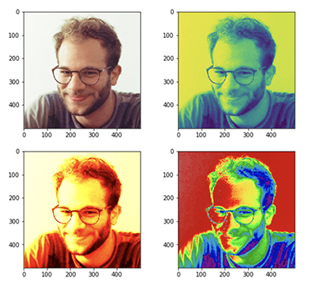

Contact me at:
basel921 at gmail dot com
shbita at usc dot edu
Basel Shbita
Research Assistant | Engineer | Artist | Burner
Interests: Knowledge Graphs · Semantic Web · Linked Open Data · Machine Learning · Information Extraction · Information Technology · Computer Networks
Hi, I'm Basel Shbita (Arabic: باسل شبيطة; Hebrew: באסל שביטה; Russian: Басель Шбита).
I am a second-year Ph.D. student in the Computer Science Department at University of Southern California (USC) in Los Angeles, CA. I work as a research assistant at the Center on Knowledge Graphs at USC's Information Sciences Institute in Marina del Rey, CA. I am advised by Prof. Craig Knoblock and also work with Prof. Pedro Szekely and Prof. Jay Pujara. My research currently focuses on knowledge graphs and the semantic web with an emphasis on data normalization as a means to solve complex information integration problems.
I am currently taking part in three major projects at ISI: Model Integration (MINT), Linked Maps and Table Understanding.
Prior to joining USC I worked for Apple (2018) as an Embedded Software Engineer in the Flash Storage Software Department and for Mellanox Technologies (2011-2017) as a Senior Firmware Engineer and Team Leader in the Switch Silicon Core Department.
I received my Bachelor of Science (B.Sc.) degree in Electrical Engineering from Tel Aviv University (magna cum laude) in 2015, specializing in CS, Communications, and Electronic Devices.
I love and enjoy art. In my free time I work on electronic music production, graphic design and movie editing. I am also part of the Anatomical Drawing Society at USC where we work alongside other artists on sketching and figure drawing.
Do you want to read more about me? check out my present and past projects.
News
Publications
-
B. Shbita, B. Vu, D. Feldman, M. Pham, A. Rajendran, C. Knoblock, J. Pujara, and Y. Chiang. Creating a FAIR Data Catalog to Support Scientific Modeling, in Workshop on Advanced Knowledge Technologies for Science in a FAIR World (AKTS), 2019 ·
paper
-
B. Shbita, A. Rajendran, J. Pujara, and C. Knoblock. Parsing, Representing and Transforming Units of Measure, in Modeling the World's Systems, 2019 ·
paper
poster
code